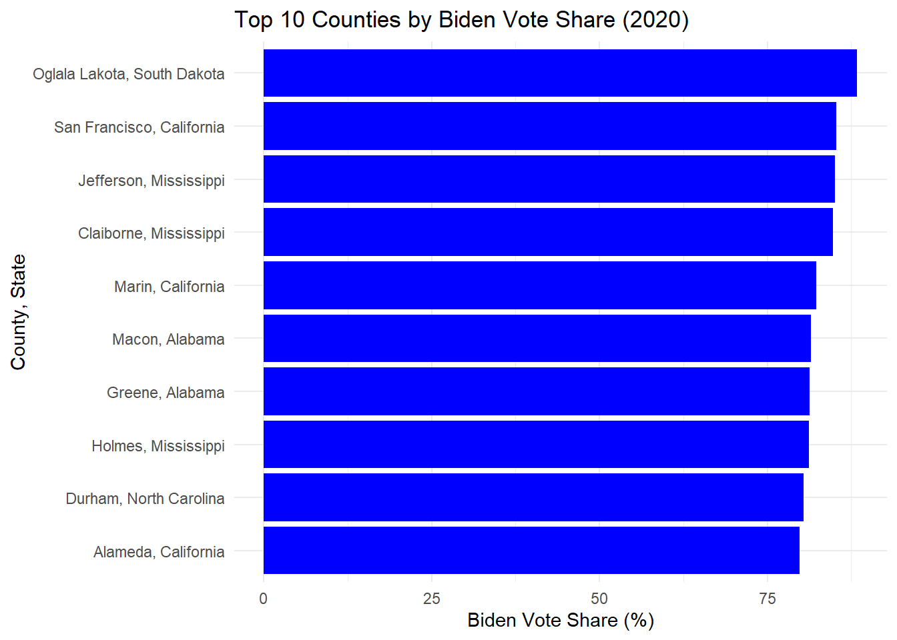
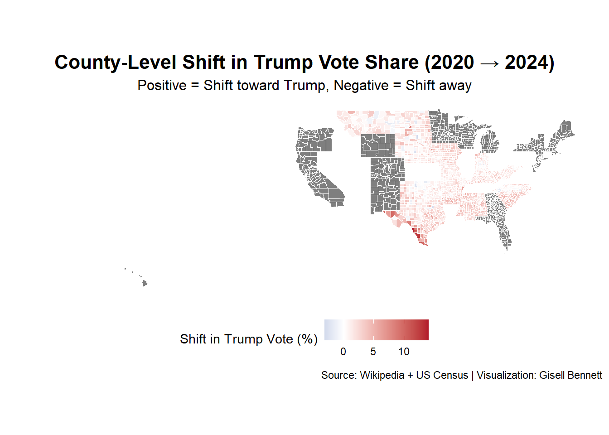
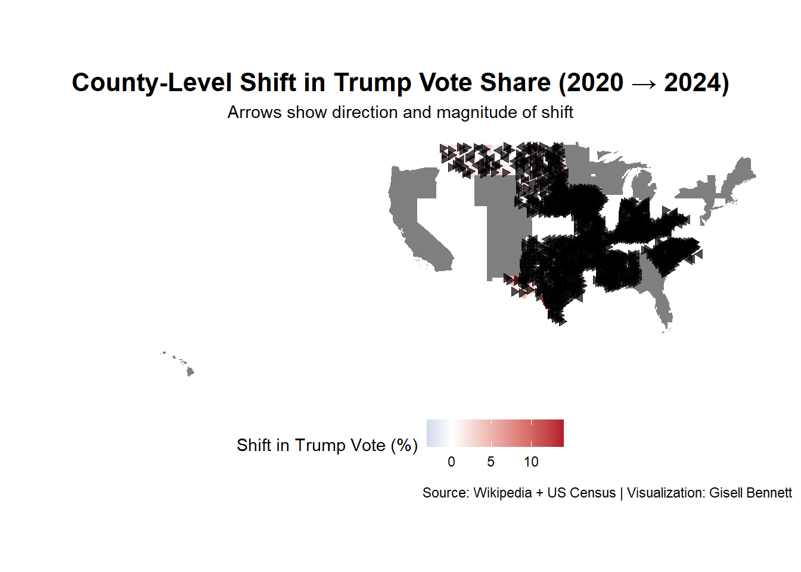

Show Code
# Load required libraries
library(httr2)
library(rvest)
library(dplyr)
library(tidyr)
library(stringr)
library(purrr)
library(sf)
library(readr)
library(ggplot2)
library(arrow)
library(janitor)Gisell Bennett
This project analyzes the shift in US presidential election results between 2020 and 2024 at the county level. Tasks include scraping election data from Wikipedia, downloading county shapefiles from the US Census Bureau, cleaning and merging the data, performing initial analysis, and reproducing a figure similar to the New York Times county shift map using geospatial tools.
County Shapes
# Path to your local shapefile
local_shapefile_path <- "C:/Users/benne/OneDrive/Documents/STA9750-2025-SPRING/cb_2023_us_county_500k.shp"
# Read shapefile
county_shapes <- sf::read_sf(local_shapefile_path)
# 1. Keep only relevant columns
county_clean <- county_shapes %>%
select(GEOID, NAME, STATEFP, geometry)
# 2. Rename for clarity
county_clean <- county_clean %>%
rename(
county_fips = GEOID,
county_name = NAME,
state_fips = STATEFP
)
# 3. Clean and standardize values
county_clean <- county_clean %>%
mutate(
county_name = str_trim(county_name),
county_name = str_to_title(county_name),
state_fips = str_pad(state_fips, 2, pad = "0"),
county_fips = str_pad(county_fips, 5, pad = "0")
)
# 4. Remove duplicates just in case
county_clean <- county_clean %>%
distinct(county_fips, .keep_all = TRUE)
# 5. Lookup for state FIPS to full state names
state_fips_lookup <- tibble::tibble(
state_fips = c("01", "02", "04", "05", "06", "08", "09", "10", "11", "12", "13", "15", "16", "17", "18", "19",
"20", "21", "22", "23", "24", "25", "26", "27", "28", "29", "30", "31", "32", "33", "34", "35",
"36", "37", "38", "39", "40", "41", "42", "44", "45", "46", "47", "48", "49", "50", "51", "53",
"54", "55", "56"),
state = c("Alabama", "Alaska", "Arizona", "Arkansas", "California", "Colorado", "Connecticut",
"Delaware", "District Of Columbia", "Florida", "Georgia", "Hawaii", "Idaho", "Illinois",
"Indiana", "Iowa", "Kansas", "Kentucky", "Louisiana", "Maine", "Maryland", "Massachusetts",
"Michigan", "Minnesota", "Mississippi", "Missouri", "Montana", "Nebraska", "Nevada",
"New Hampshire", "New Jersey", "New Mexico", "New York", "North Carolina", "North Dakota",
"Ohio", "Oklahoma", "Oregon", "Pennsylvania", "Rhode Island", "South Carolina",
"South Dakota", "Tennessee", "Texas", "Utah", "Vermont", "Virginia", "Washington",
"West Virginia", "Wisconsin", "Wyoming")
)
# Add state names to county_clean using state_fips_lookup
county_clean <- county_clean %>%
left_join(state_fips_lookup, by = "state_fips")
# Quick preview of county_clean
glimpse(county_clean)Rows: 3,235
Columns: 5
$ county_fips <chr> "01003", "01069", "01005", "01119", "05091", "05133", "050…
$ county_name <chr> "Baldwin", "Houston", "Barbour", "Sumter", "Miller", "Sevi…
$ state_fips <chr> "01", "01", "01", "01", "05", "05", "05", "06", "06", "06"…
$ geometry <MULTIPOLYGON [°]> MULTIPOLYGON (((-88.02858 3..., MULTIPOLYGON …
$ state <chr> "Alabama", "Alabama", "Alabama", "Alabama", "Arkansas", "A…2024 County Level Election Results
# scraping function
scrape_state_results_2024 <- function(state_name) {
safe_state <- gsub(" ", "_", state_name)
url <- paste0("https://en.wikipedia.org/wiki/2024_United_States_presidential_election_in_", safe_state)
html_path <- file.path("data/mp04/html", paste0(safe_state, "_2024.html"))
# Download and save HTML if not already present
if (!file.exists(html_path)) {
resp <- request(url) |> req_perform()
writeBin(resp_body_raw(resp), html_path)
}
# Read HTML and extract tables
page <- read_html(html_path)
tables <- page |> html_elements("table") |> html_table(fill = TRUE)
# Identify the table with county results
county_table <- NULL
for (tbl in tables) {
if (any(str_detect(names(tbl), regex("County|Parish|Borough", ignore_case = TRUE)))) {
county_table <- tbl
break
}
}
if (is.null(county_table)) {
warning(paste("No county-level table found for", state_name))
return(NULL)
}
# Clean and return county table
county_table <- county_table |>
janitor::clean_names() |> # Standardize column names
mutate(state = state_name) # Add state column for reference
return(county_table)
}
# List of all U.S. states
states <- c("Alabama", "Alaska", "Arizona", "Arkansas", "California", "Colorado",
"Connecticut", "Delaware", "Florida", "Georgia", "Hawaii", "Idaho",
"Illinois", "Indiana", "Iowa", "Kansas", "Kentucky", "Louisiana",
"Maine", "Maryland", "Massachusetts", "Michigan", "Minnesota", "Mississippi",
"Missouri", "Montana", "Nebraska", "Nevada", "New Hampshire", "New Jersey",
"New Mexico", "New York", "North Carolina", "North Dakota", "Ohio", "Oklahoma",
"Oregon", "Pennsylvania", "Rhode Island", "South Carolina", "South Dakota",
"Tennessee", "Texas", "Utah", "Vermont", "Virginia", "Washington",
"West Virginia", "Wisconsin", "Wyoming")
# Initialize an empty list to store the data for each state
all_states_data <- list()
# Loop through each state to scrape the data
for (state in states) {
# Call the function to scrape the data for the current state
state_data <- scrape_state_results_2024(state)
# If the data was successfully retrieved, add it to the list
if (!is.null(state_data)) {
all_states_data[[state]] <- state_data
}
}
# Scrape and collect 2024 data from all states
all_states_data_2024 <- map(states, scrape_state_results_2024) |>
set_names(states) |>
compact()
# Combine into a single data frame
combined_data_2024 <- bind_rows(all_states_data_2024)
# Clean and select relevant columns
cleaned_data_2024 <- combined_data_2024 |>
rename_with(~ str_replace_all(., "[^[:alnum:]_]", "_")) |>
rename(
county_name = county,
trump_votes = donald_trump_republican,
harris_votes = kamala_harris_democratic,
total_votes = total
) |>
mutate(
county_name = str_to_title(county_name),
state = str_to_title(state),
county_name = str_replace_all(county_name, "[^[:alnum:] ]", ""),
state = str_replace_all(state, "[^[:alnum:] ]", "")
) |>
select(state, county_name, trump_votes, harris_votes, total_votes)
# View cleaned data
head(cleaned_data_2024)# A tibble: 6 × 5
state county_name trump_votes harris_votes total_votes
<chr> <chr> <chr> <chr> <chr>
1 Alabama County # # Total
2 Alabama Autauga 20,484 7,439 28,281
3 Alabama Baldwin 95,798 24,934 122,249
4 Alabama Barbour 5,606 4,158 9,855
5 Alabama Bibb 7,572 1,619 9,257
6 Alabama Blount 25,354 2,576 28,163 2020 County Level Election Results
# Scraping function for 2020
scrape_state_results_2020 <- function(state_name) {
safe_state <- gsub(" ", "_", state_name)
url <- paste0("https://en.wikipedia.org/wiki/2020_United_States_presidential_election_in_", safe_state)
html_path <- file.path("data/mp04/html", paste0(safe_state, "_2020.html"))
if (!file.exists(html_path)) {
resp <- request(url) |> req_perform()
writeBin(resp_body_raw(resp), html_path)
}
page <- read_html(html_path)
tables <- page |> html_elements("table") |> html_table(fill = TRUE)
county_table <- NULL
for (tbl in tables) {
if (any(str_detect(names(tbl), regex("County|Parish|Borough", ignore_case = TRUE)))) {
county_table <- tbl
break
}
}
if (is.null(county_table)) {
warning(paste("No county-level table found for", state_name))
return(NULL)
}
county_table <- county_table |>
janitor::clean_names() |>
mutate(state = state_name)
return(county_table)
}
# List of all U.S. states
states <- c("Alabama", "Alaska", "Arizona", "Arkansas", "California", "Colorado",
"Connecticut", "Delaware", "Florida", "Georgia", "Hawaii", "Idaho",
"Illinois", "Indiana", "Iowa", "Kansas", "Kentucky", "Louisiana",
"Maine", "Maryland", "Massachusetts", "Michigan", "Minnesota", "Mississippi",
"Missouri", "Montana", "Nebraska", "Nevada", "New Hampshire", "New Jersey",
"New Mexico", "New York", "North Carolina", "North Dakota", "Ohio", "Oklahoma",
"Oregon", "Pennsylvania", "Rhode Island", "South Carolina", "South Dakota",
"Tennessee", "Texas", "Utah", "Vermont", "Virginia", "Washington",
"West Virginia", "Wisconsin", "Wyoming")
# Scrape and collect data from all states
all_states_data_2020 <- map(states, scrape_state_results_2020) |>
set_names(states) |>
compact()
# Combine into a single data frame
combined_data_2020 <- bind_rows(all_states_data_2020)
# Standardize and clean key fields
cleaned_data_2020 <- combined_data_2020 |>
rename_with(~ str_replace_all(., "[^[:alnum:]_]", "_")) |>
rename(
county_name = county,
trump_votes = donald_trump_republican,
biden_votes = joe_biden_democratic,
total_votes = total
) |>
mutate(
county_name = str_to_title(county_name),
state = str_to_title(state),
county_name = str_replace_all(county_name, "[^[:alnum:] ]", ""),
state = str_replace_all(state, "[^[:alnum:] ]", "")
) |>
select(state, county_name, trump_votes, biden_votes, total_votes)
# View result
head(cleaned_data_2020)# A tibble: 6 × 5
state county_name trump_votes biden_votes total_votes
<chr> <chr> <chr> <chr> <chr>
1 Alabama County # # Total
2 Alabama Autauga 19,838 7,503 27,770
3 Alabama Baldwin 83,544 24,578 109,679
4 Alabama Barbour 5,622 4,816 10,518
5 Alabama Bibb 7,525 1,986 9,595
6 Alabama Blount 24,711 2,640 27,588 Joining Data
# Join 2020 and 2024 election results
election_combined <- full_join(
cleaned_data_2020,
cleaned_data_2024,
by = c("state", "county_name"),
suffix = c("_2020", "_2024")
)
# Join election data with shapefile
election_geo <- county_clean %>%
left_join(election_combined, by = c("county_name", "state"))
# Filter out rows with no election data
election_geo <- election_geo %>%
filter(!is.na(trump_votes_2020) | !is.na(trump_votes_2024))
# convert vote columnss to numbers
election_geo <- election_geo |>
mutate(across(
contains("votes"),
~ as.numeric(gsub(",", "", .))
))
# Preview
glimpse(election_geo)Rows: 2,249
Columns: 11
$ county_fips <chr> "01003", "01069", "01005", "01119", "05091", "05133",…
$ county_name <chr> "Baldwin", "Houston", "Barbour", "Sumter", "Miller", …
$ state_fips <chr> "01", "01", "01", "01", "05", "05", "05", "06", "06",…
$ geometry <MULTIPOLYGON [°]> MULTIPOLYGON (((-88.02858 3..., MULTIPOL…
$ state <chr> "Alabama", "Alabama", "Alabama", "Alabama", "Arkansas…
$ trump_votes_2020 <dbl> 83544, 32618, 5622, 1598, 11920, 3884, 7296, 1145530,…
$ biden_votes <dbl> 24578, 12917, 4816, 4648, 4245, 1116, 4558, 3028885, …
$ total_votes_2020 <dbl> 109679, 46173, 10518, 6291, 16529, 5202, 12342, 42839…
$ trump_votes_2024 <dbl> 95798, 32469, 5606, 1542, 11842, 3772, 6963, 1189862,…
$ harris_votes <dbl> 24934, 11352, 4158, 3725, 3769, 862, 3574, 2417109, 1…
$ total_votes_2024 <dbl> 122249, 44349, 9855, 5307, 15803, 4714, 10717, NA, NA…1. Which county or counties cast the most votes for Trump (in absolute terms) in 2024?
Simple feature collection with 1 feature and 2 fields
Geometry type: MULTIPOLYGON
Dimension: XY
Bounding box: xmin: -118.9446 ymin: 32.80146 xmax: -117.6464 ymax: 34.8233
Geodetic CRS: NAD83
# A tibble: 1 × 3
county_name trump_votes_2024 geometry
<chr> <dbl> <MULTIPOLYGON [°]>
1 Los Angeles 1189862 (((-118.6044 33.47855, -118.5988 33.47794, -118.…2. Which county or counties cast the most votes for Biden (as a fraction of total votes cast) in 2020?
# Convert relevant vote columns to numeric and remove geometry
election_table <- election_geo |>
st_drop_geometry() |> # Remove geometry for a simpler table
mutate(across(contains("votes"), ~ as.numeric(gsub(",", "", .))))
# Calculate Biden vote fraction (as a percentage)
biden_fraction_table <- election_table |>
mutate(biden_fraction_2020 = round((biden_votes / total_votes_2020) * 100, 2)) |>
filter(!is.na(biden_fraction_2020)) |>
arrange(desc(biden_fraction_2020)) |>
select(state, county_name, biden_fraction_2020, total_votes_2020)
# Show the top 10 counties
head(biden_fraction_table, 10)# A tibble: 10 × 4
state county_name biden_fraction_2020 total_votes_2020
<chr> <chr> <dbl> <dbl>
1 South Dakota Oglala Lakota 88.4 3200
2 California San Francisco 85.3 443553
3 Mississippi Jefferson 85.1 3908
4 Mississippi Claiborne 84.8 4449
5 California Marin 82.3 155830
6 Alabama Macon 81.5 8723
7 Alabama Greene 81.3 4775
8 Mississippi Holmes 81.2 8115
9 North Carolina Durham 80.4 179914
10 California Alameda 79.8 773753# Take top 10 for plotting
top_biden_counties <- biden_fraction_table |> slice_max(biden_fraction_2020, n = 10)
# Create the bar chart
ggplot(top_biden_counties, aes(x = reorder(paste(county_name, state, sep = ", "), biden_fraction_2020),
y = biden_fraction_2020)) +
geom_col(fill = "blue") +
coord_flip() +
labs(
title = "Top 10 Counties by Biden Vote Share (2020)",
x = "County, State",
y = "Biden Vote Share (%)"
) +
theme_minimal()
3. Which county or counties had the largest shift towards Trump (in absolute terms) in 2024?
# Convert relevant vote columns to numeric
election_table <- election_geo |>
st_drop_geometry() |> # Remove geometry for a simpler table
mutate(across(contains("votes"), ~ as.numeric(gsub(",", "", .))))
# Calculate the shift in Trump's votes between 2020 and 2024 (absolute terms)
shift_table <- election_table |>
mutate(trump_shift = trump_votes_2024 - trump_votes_2020) |>
arrange(desc(trump_shift)) |>
select(state, county_name, trump_shift, trump_votes_2020, trump_votes_2024)
# Show the county or counties with the largest shift towards Trump (in absolute terms)
head(shift_table, 10) # A tibble: 10 × 5
state county_name trump_shift trump_votes_2020 trump_votes_2024
<chr> <chr> <dbl> <dbl> <dbl>
1 California Los Angeles 44332 1145530 1189862
2 Texas Bexar 28927 308618 337545
3 Texas Montgomery 28582 193382 221964
4 Texas Denton 28041 222480 250521
5 Texas Collin 27216 252318 279534
6 Michigan Wayne 24307 264553 288860
7 South Carolina Horry 22898 118821 141719
8 Texas Harris 22065 700630 722695
9 Michigan Macomb 20797 263863 284660
10 Texas El Paso 20793 84331 1051244. Which state had the largest shift towards Harris (or smallest shift towards Trump) in 2024? (Note that the total votes for a state can be obtained by summing all counties in that state.)
# Aggregate the total votes by state
state_shift_table <- election_table |>
group_by(state) |>
summarise(
trump_votes_2020 = sum(trump_votes_2020, na.rm = TRUE),
trump_votes_2024 = sum(trump_votes_2024, na.rm = TRUE),
harris_votes_2024 = sum(harris_votes, na.rm = TRUE)
) |>
mutate(
trump_shift = trump_votes_2024 - trump_votes_2020,
harris_shift = harris_votes_2024 # Only considering Harris's 2024 votes
)
# Find the state with the largest shift towards Harris (smallest shift towards Trump)
state_with_largest_harris_shift <- state_shift_table |>
arrange(desc(harris_shift)) |>
slice(1) |>
select(state, harris_shift, trump_shift)
# Display the result
state_with_largest_harris_shift# A tibble: 1 × 3
state harris_shift trump_shift
<chr> <dbl> <dbl>
1 California 9276179 751795. What is the largest county, by area, in this data set?
Simple feature collection with 1 feature and 3 fields
Geometry type: MULTIPOLYGON
Dimension: XY
Bounding box: xmin: -117.8025 ymin: 33.87104 xmax: -114.1312 ymax: 35.80963
Geodetic CRS: NAD83
# A tibble: 1 × 4
county_name state area geometry
<chr> <chr> [m^2] <MULTIPOLYGON [°]>
1 San Bernardino California 52079664612. (((-117.8025 33.97555, -117.7911 33.99…6. Which county has the highest voter density (voters per unit of area) in 2020?
# Calculate the area for each county and voter density
voter_density_table <- election_geo |>
mutate(
area = st_area(geometry), # Calculate the area of each county
voter_density_2020 = as.numeric(total_votes_2020) / as.numeric(area) # Calculate voter density
) |>
arrange(desc(voter_density_2020)) |>
slice(1) |>
select(county_name, state, voter_density_2020, area, total_votes_2020)
# Display the result
voter_density_tableSimple feature collection with 1 feature and 5 fields
Geometry type: MULTIPOLYGON
Dimension: XY
Bounding box: xmin: -123.0139 ymin: 37.69274 xmax: -122.328 ymax: 37.86306
Geodetic CRS: NAD83
# A tibble: 1 × 6
county_name state voter_density_2020 area total_votes_2020
<chr> <chr> <dbl> [m^2] <dbl>
1 San Francisco California 0.00362 122413455. 443553
# ℹ 1 more variable: geometry <MULTIPOLYGON [°]>7. Which county had the largest increase in voter turnout in 2024?
# Step 1: Calculate the change in voter turnout from 2020 to 2024
turnout_increase_table <- election_geo |>
mutate(
turnout_increase = as.numeric(total_votes_2024) - as.numeric(total_votes_2020) # Calculate increase in turnout
) |>
arrange(desc(turnout_increase)) |>
slice(1) |>
select(county_name, state, total_votes_2020, total_votes_2024, turnout_increase)
# Display the result
turnout_increase_tableSimple feature collection with 1 feature and 5 fields
Geometry type: MULTIPOLYGON
Dimension: XY
Bounding box: xmin: -95.83024 ymin: 30.0279 xmax: -95.09671 ymax: 30.63028
Geodetic CRS: NAD83
# A tibble: 1 × 6
county_name state total_votes_2020 total_votes_2024 turnout_increase
<chr> <chr> <dbl> <dbl> <dbl>
1 Montgomery Texas 271543 307258 35715
# ℹ 1 more variable: geometry <MULTIPOLYGON [°]>Reading layer `cb_2023_us_county_500k' from data source
`C:\Users\benne\OneDrive\Documents\STA9750-2025-SPRING\cb_2023_us_county_500k.shp'
using driver `ESRI Shapefile'
Simple feature collection with 3235 features and 12 fields
Geometry type: MULTIPOLYGON
Dimension: XY
Bounding box: xmin: -179.1467 ymin: -14.5487 xmax: 179.7785 ymax: 71.38782
Geodetic CRS: NAD83us_reprojected <- st_transform(us_shapefile, crs = 4326)
# Calculate vote share shift
election_data <- election_geo |> # Make sure election_geo includes shapefile geometry
mutate(
trump_pct_2020 = as.numeric(trump_votes_2020) / as.numeric(total_votes_2020) * 100,
trump_pct_2024 = as.numeric(trump_votes_2024) / as.numeric(total_votes_2024) * 100,
shift_pct = trump_pct_2024 - trump_pct_2020
)
# Draw the map
ggplot(data = election_data) +
geom_sf(aes(fill = shift_pct), color = "white", size = 0.1) +
scale_fill_gradient2(
low = "#2166ac", # Blue: shift away from Trump
mid = "white",
high = "#b2182b", # Red: shift toward Trump
midpoint = 0,
name = "Shift in Trump Vote (%)"
) +
labs(
title = "County-Level Shift in Trump Vote Share (2020 → 2024)",
subtitle = "Positive = Shift toward Trump, Negative = Shift away",
caption = "Source: Wikipedia + US Census | Visualization: Gisell Bennett"
) +
theme_minimal() +
theme(
legend.position = "bottom",
plot.title = element_text(size = 16, face = "bold", hjust = 0.5),
plot.subtitle = element_text(size = 12, hjust = 0.5),
axis.text = element_blank(),
axis.title = element_blank(),
panel.grid = element_blank()
)
centroids <- st_centroid(election_data)
centroids_coords <- st_coordinates(centroids)
election_data <- election_data |>
mutate(
lon = centroids_coords[,1],
lat = centroids_coords[,2],
dx = ifelse(abs(shift_pct) > 1, shift_pct / 10, 0), # Arrow x-length (scaled)
dy = 0 # Optional: all arrows horizontal
)
ggplot(data = election_data) +
# Background county fill (optional)
geom_sf(aes(fill = shift_pct), color = NA) +
scale_fill_gradient2(
low = "#2166ac", mid = "white", high = "#b2182b",
midpoint = 0, name = "Shift in Trump Vote (%)"
) +
# Arrows for vote share shift
geom_segment(
aes(x = lon, y = lat, xend = lon + dx, yend = lat + dy),
arrow = arrow(length = unit(0.08, "inches"), type = "closed"),
size = 0.3, color = "black", alpha = 0.7
) +
labs(
title = "County-Level Shift in Trump Vote Share (2020 → 2024)",
subtitle = "Arrows show direction and magnitude of shift",
caption = "Source: Wikipedia + US Census | Visualization: Gisell Bennett"
) +
theme_minimal() +
theme(
legend.position = "bottom",
plot.title = element_text(hjust = 0.5, size = 16, face = "bold"),
plot.subtitle = element_text(hjust = 0.5),
axis.text = element_blank(),
axis.title = element_blank(),
panel.grid = element_blank()
)
Aesthetic mapping:
* `colour` -> `shift_pct > 0`